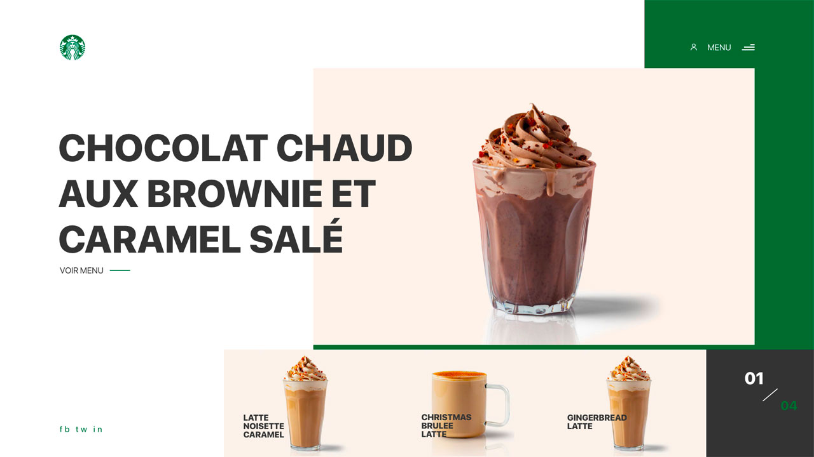
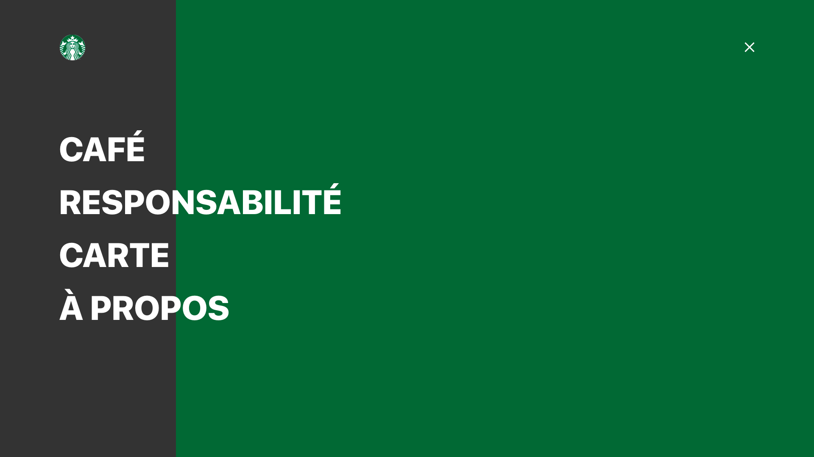

Projet Starbucks
Projet fait dans le cadre personnel. Mon idée était de remoderniser le site de Starbucks afin qu'il soit plus claire et plus simple d'utilisation avec moins de sous-menu et un design plus élégant.
 Couleurs :
#333333
#016934
Client :
Starbucks
Je suis partis de l'idée de proumouvoir leurs nouvelles boissons sortis spécialement pour Noël, en remodernisant le site, qui ce veut assez vieillissant (design de 2010). Pour cela, j'ai fais un header très simple avec le logo de la compagnie et un menu burger pour alléger la page d'acceuil. En effet les menus et les sous-menus de Starbucks sont très chargés. Pour la section j'ai voulu faire un carrousel des 4 nouvelles boisson de la marque. Qui pourront être changé pour promouvoir d'autres produits. Pour les couleurs je n'ai pas changé la charte graphique ainsi le vert de Starbucks et le gris foncé des menus sont resté présent.